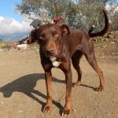
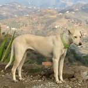

Nuestra Historia
El Refugio de Leo es una organización benéfica dedicada a ayudar y cuidar a los animales abandonados y maltratados.
Cómo empezó todo
Todo comenzó cuando encontramos perros abandonados en la Vega de Vélez. Allí descubrimos tres generaciones de una familia canina: Maya, una madre con sus cuatro cachorros (Fito, Luna, Lisa y Vera), y dos perros mayores de una camada anterior, Hera y Negrito.
Cuando los vecinos se quejaron, no nos quedó más remedio que reubicarlos temporalmente en casas de acogida. Fue entonces cuando decidimos construir nuestro propio refugio. Levantamos perreras, gestionamos el suministro de agua y transformamos nuestra parcela en un verdadero hogar para ellos.
Lisa y Luna fueron las primeras residentes permanentes del refugio después de que el patrocinador de su residencia anterior retirara la financiación. Desde entonces, funcionamos únicamente con el apoyo de voluntarios y donaciones, sin ayuda gubernamental, dedicando cada recurso al bienestar de los animales.

Maya
Fito

Hera
"Maya, Fito y Hera fueron parte de los primeros animales que rescatamos, marcando el inicio de nuestra misión."
Nuestros Valores
Dedicación
Trabajamos incansablemente por el bienestar de cada animal que llega a nuestras manos.
Comunidad
Funcionamos gracias al apoyo de voluntarios y donantes que creen en nuestra causa.
Cuidado
Cada animal recibe atención veterinaria, alimentación y amor mientras busca su hogar definitivo.